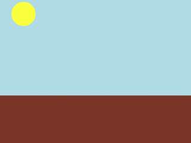
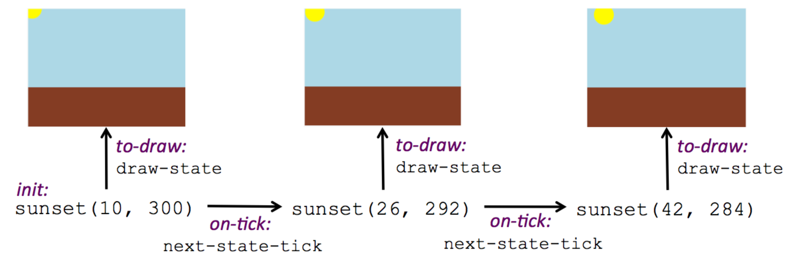
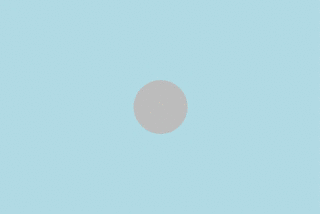
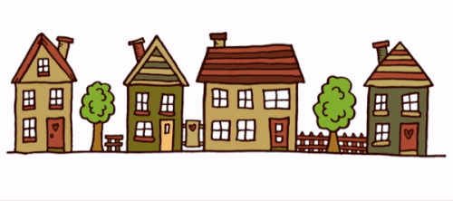
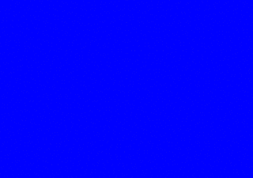
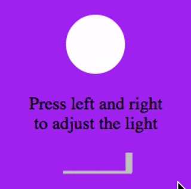

Structures, Reactors, and Animations
Students implement animation using a modified Model-View-Controller paradigm called Reactors. Using a data structure to represent the position of an object, they write draw-state functions to draw single frame from instances of that structure and next-state-tick functions to generate new instances from previous ones. They learn how to use Reactors to combine their structure and functions into a complete animation.
|
Product Outcomes |
|
|
Materials |
data structure-
a 'container' data type, which has fields that can hold other data (e.g. - a 'coordinate' is a data structure holding number fields x and y)
field-
a part of a data structure that has a name and holds a single value of a specified data type
function-
a relation from a set of inputs to a set of possible outputs, where each input is related to exactly one output
handler-
Connects an event (like a tick or keypress) and a function within a reactor
instance-
a specific example of a data structure, with specific values for each field (e.g. - (4,5) is an instance of an (x,y) coordinate
reactor-
a value that contains a current state, and functions for updating, drawing, and interacting with that state
state-
the value of a changing system at any point in time (i.e. a stoplight can be in the 'red', 'yellow' or 'green' state). In Pyret, the state of a Reactor is it’s current value.
| Animations in Pyret | 55 minutes |
Overview
Students are introduced to Reactors, Pyret’s mechanism for created animated time-based simulations or interactive programs. With Reactors serving as the bridge between making images and defining data structures, students begin to create simple animations.
Launch
You’ve learned how to create data structures, and how to create images. Now it’s time to put these together to create an animation in Pyret. We’ll even go a step further than what we did in Bootstrap:Algebra, creating an animation with movement in two dimensions.
In Bootstrap:Algebra, many decisions about your animation were made for you. We told you how many characters you had and which aspects of them could change during the animation. The danger always moved in the x-axis, the player always moved in the y-axis. In Bootstrap:Reactive, we give you much more control of your game: you decide how many characters you will have, and what aspects of them can change (position, color, size, etc). In order to have this flexibility, we need to do a little more work to set up the animation. Let’s break down an animation to see what we need.
Let’s create an animation of a sunset. The sun will start at the top-left corner of the screen and fall diagonally down and right across the sky. Here’s a running version of the animation we are trying to create. Notice that the sun dips below the horizon in the bottom-right corner.

{kind=link}
An animation is made of a sequence of images that we flip through quickly. We continue to think of an animation as a sequence of images in Bootstrap:Reactive. For example, here are the first three frames of the sunset animation:
{kind=link}
Where will we get this sequence of images? We don’t want to create them all by hand. Instead, we want to write programs that will create them for us. This is the power of computer programming. It can automate tasks (like creating new images) that might otherwise be tedious for people to do. There are four steps to creating animations programs. You’ve actually already done the first three in the first two units, but now we need to show you how to put them together.
This is a key point at which to emphasize why functions are important to computer science. Computers are good at repetition, but they need instructions telling them what steps to repeat. Functions capture those instructions.
Step 1: Define the data structure
The first step is to develop a data structure for the information that changes across frames. To do this, we need to figure out what fields our data structure will need.
Turn to Identifying Animation Data Worksheet in your workbook. Copy the three sunset images we gave you into the boxes at the top of the worksheet.
To identify the fields, we have to figure out what information is needed to create each frame image. Information that changes from frame to frame must be in the data structure.
On your worksheet, fill in the table just below the three images to indicate what information changes across the frames.
Hopefully, you identified two pieces of changing information: the x-coordinate of the sun and the y-coordinate of the sun. Each image also contains the horizon (the brown rectangle), but that is the same in every frame. Let’s write down a data structure that captures the two coordinates.
Fill in the second table, giving a name and type for each of the x-coordinate and y-coordinate. Then turn to Design a Data Structure and fill in the SunsetState data structure definition at the top of the page. Use sunset as the name of the constructor.
You should have come up with something like this: a data block with numbers for the two coordinates.
# a SunsetState is the x-coordinate of the sun
# and the y-coordinate of the sun
data SunsetState:
| sunset(
xpos :: Number,
ypos :: Number)
endHave students open the Sunset Starter File, and confirm that the data definition in their notes matches the definition in the file.
The term "state" is used in computer science to refer to the details of a program at a specific point in time. Here, we use it to refer to the details that are unique to a single frame of the animation.
Have students copy the images into the workbook partly to make sure they understand what images they are working with, and partly so that they have a self-contained worksheet page for later reference.
What’s in a Name? We are adopting a convention here, in which we include "State" in the name of the data block, then use the same base name (without "State") for the constructor. By not conflating the names here, students should have an easier time distinguishing between the constructor name and data structure name. |
Any time we make a data structure, we should make some sample instances: this helps check that we have the right fields and gives us data to use in making examples later.
Investigate
At the bottom of the worksheet, use the sunset constructor to write write down the SunsetState instance for the first frame (labeled “Sketch A”). It has x-coordinate 10 and y-coordinate 300.
Step 2: Draw one frame
The second step in making an animation is to write a function that consumes an instance of one state and produces the image for that instance. We call this function draw-state. For sunset, draw-state takes a SunsetState instance and produces an image with the sun at that location (dipping behind the horizon when low in the sky).
Go to Word Problem: draw-state in your workbook and develop the draw-state function described there. Type in your function and use it (in the interactions window) to draw several individual sunset frames.
You may have noticed that we used SunsetState instead of sunset as the domain name. Remember that sunset is just the name of the constructor, while SunsetState is the name of the type. We use SunsetState whenever we need a type name for the domain or range.
We can now draw one frame, but an animation needs many frames. How can we draw multiple frames? Let’s simply the problem a bit: if you have the instance for one frame, how do we compute the instance for the next frame? Note we didn’t ask how to produce the image for the next frame. We only asked how to produce the next SunsetState instance. Why? We just wrote draw-state, which produces the image from a SunsetState. So if we can produce the instance for the next frame, we can use draw-state to produce the image.
Step 3: Produce the next frame instance
The third step in making an animation is to write a function that consumes an instance of one state and produces the instance for the next state. We call this function next-state-tick. For sunset, next-state-tick takes a SunsetState instance and produces a SunsetState instance that is just a little lower in the sky.
Go to Word Problem: next-state-tick in your workbook and develop the next-state-tick function described there. Use the sample SunsetState instances that you developed in step 1 as you make your examples of the function. Then, type in the code you have so far (including the data definition for SunsetState into the sunset starter file, and make sure your examples are producing the expected answers.
Together, the draw-state and next-state-tick functions are the building blocks for an animation. To start to see how, let’s first use these two functions to create the first several frames of an animation by hand (then we’ll show you how to make more frames automatically).
Run each of the following expressions in the interactions window in turn. Just copy and paste them, rather than type them by hand each time:
-
draw-state(sunset(10,300)) -
next-state-tick(sunset(10,300))
Now use draw-state on the result of next-state-tick, then call next-state-tick again:
-
draw-state(sunset(18,296)) -
next-state-tick(sunset(18,296)) -
draw-state(sunset(26,292)) -
next-state-tick(sunset(26,292))
Do you see the sun getting lower in the sky from image to image? Do you see how we are creating a “chain” of images by alternating calls to draw-state and next-state-tick? We use next-state-tick to create the instance for a new frame, then use draw-state to produce the image for that frame.
(Optional) Here’s another way to see the same sequence of expressions. Run each of the following expressions in the interactions window in turn. Just copy and paste them, rather than type them by hand each time:
-
draw-state(sunset(10,300)) -
draw-state(next-state-tick(sunset(10,300))) -
draw-state(next-state-tick(next-state-tick(sunset(10,300)))) -
draw-state(next-state-tick(next-state-tick(next-state-tick(sunset(10,300)))))
Do you see what this sequence of expressions does? Each one starts with the sun in the upper-left corner, calls next-state-tick one or more times to compute a new position for the sun, then draws the state. Notice that this sequence only has us write down one SunsetState instance explicitly (the first one). All the others are computed from next-state-tick. If we could only get Pyret to keep making these calls for us, and to show us the images quickly one after the next, we’d have an animation!
Step 4: Define an animation with a reactor
The fourth (and final) step in making an animation is to tell
Pyret to create an animation using an initial SunsetState
instance and our draw-state and next-state-tick functions. To do
this, we need a new construct called a reactor. A reactor gathers
up the information needed to create an animation:
-
An instance of the data at the start of the animation
-
(Optional) A function that knows how this data should change automatically as time passes
-
(Optional) A function that knows how to take this data and draw one frame of the animation
A reactor is designed to “react” to different events. When the
computer’s clock ticks, we’d like to call next-state-tick on the
reactor’s state, and have it update to the next state
automatically. Reactors have event handlers, which connect events
to functions.
Here, we define a reactor named sunset-react for the sunset animation:
sunset-react = reactor:
init: sunset(10, 300),
on-tick: next-state-tick,
to-draw: draw-state
endinit tells the reactor which instance to use when the program
starts. In this example, the program will start with a
SunsetState instance with the sun at (10, 30). on-tick and
to-draw are event handlers, which connect tick and draw events to
our next-state-tick and draw-state functions.
Copy this reactor definition into your sunset animation program.
Common Misconceptions
Separating the instance from the image of it is key here: when we produce an animation, we actually produce a sequence of instances, and use draw-state to produce each one. Students may need some practice to think of the instance as separate from the image that goes into the animation.
If you run your sunset program after adding the reactor, nothing seems to happen. We have set up an animation by defining sunset-react, but we haven’t told Pyret to run it. You could define multiple reactors in the same file, so we have to tell
Pyret explicitly when we want to run one.
Type interact(sunset-react) in the interactions window to run your sunset animation.
What happens when we call interact? The following diagram summarizes what Pyret does to run the animation. It draws the initial instance, then repeatedly calls next-state-tick and draw-state to create and display successive frames of your animation.

{kind=link}
These are the same computations you did by hand in the interactions window a little while ago, but Pyret now automates the cycle of generating and drawing instances. By having functions that can generate instances and draw images, we can let the computer do the work of creating the full animation.
Functions are essential to creating animations, because each frame comes from a different SunsetState instance. The process of drawing each instance is the same, but the instance is different each time. Functions are computations that we want to perform many times. In an animation, we perform the draw-state and next-state-tick functions once per frame. Animations are an excellent illustration of why functions matter in programming.
Synthesize
Summarizing what we have seen so far, we have to write four things in order to make an animation:
-
Create a data structure to hold the information that changes across frames. This information is called the state.
-
Write a function to generate an image of the current state (we’ll call this
draw-state). -
Write a function to generate a new state from a given state (we’ll call this
next-state-tick). -
Define a {reactor} that will use an initial instance of the state and the two functions to create an animation.
At this point, you could create your own animation from scratch by following these four steps. If you do, you may find it helpful to use one of the animation design worksheets at the back of your workbook: it takes you through sketching out your frames, developing the data structure for your animation state, and writing the functions for the animation. It also gives you a checklist of the four steps above. The checklist mentions a fifth (optional) step, which involves getting your characters to respond when the user presses a key. You’ll learn how to do that in the next unit.
The animation-design worksheet is a condensed summary of the steps to creating an animation. If your students still need more scaffolding, follow the sequence of sheets that we used to develop sunset, including explicit worksheets for draw-state and next-state-tick. If your students are doing fine without the scaffolding of the design recipe worksheets, the condensed worksheet should suffice to keep them on track (though they should still write tests and follow the other steps of the design recipe as they work).
You have just seen the incredible power of functions in programming! Functions let us generate content automatically. In the early days of making cartoons, artists drew every frame by hand. They had to decide at the beginning how many frames to create. Here, we let the computer generate as many frames as we want, by letting it call next-state-tick over and over until we stop the animation. If we want to slow down the sunset, we simply change the new coordinates within next-state-tick. If we start with a larger screen size, the computer will continue to generate as many images as we need to let the sun drop out of the window. The computer can give us this flexibility as long as we provide a function that tells the computer how to generate another frame.
| From Animations to Structures | 55 minutes |
Overview
An animation that only changes one number (e.g. - the x-coordinate of a plane flying across the sky, or the y-coordinate of a balloon floating upwards) uses that number as the Reactor state. But what if we wanted to do something more complex, which relied on keeping track of more than one number? This activity uses more complex animation to motivate the need for data structures.
Launch
You’ve learned the components of an animation in Pyret. The data structure for the state lies at the heart of the animation: each of the initial state, the draw-state function and the next-state-tick function are based on the data structure you choose. Being able to figure out the data structure you need for an animation is therefore a critical skills in making your own animations. In this lesson, we are going to practice identifying the data and creating the data structures for various animations. We will not write the entire animation. We are just going to practice identifying the data and writing the data structures.
Investigate

{kind=link}
Exercise: Jumping Cow — Look at this animation of a cow jumping over the moon.
Go to Identifying Animation Data Worksheet in the workbook. Draw three frames from this animation. Choose ones that highlight differences across the frames. The frames don’t need to be consecutive.
When you chose which frames to draw, did you include ones with different images or heights of the cow? Choosing images with some variation will help you think through the data in your animation.
Fill in the table of what information changes across the frames.
In this case, the cow’s x-coordinate and y-coordinate are both changing. The image changes too, but the position (coordinates) determines which image to use. The state data structure therefore only needs to store the coordinates.
Fill in the table of what fields you need for each piece of changing information. Write a data structure CowState to capture the data in this animation.
If students want to include the image in the state, that is fine too. Examples like this are good for raising discussion about what parts of an animation depend on one another. The image doesn’t need to be in the state, but it isn’t wrong to include it there either.

{kind=link}
Go to the next animation worksheet page in the workbook. Draw three frames from this animation. Choose ones that highlight differences across the frames. The frames don’t need to be consecutive. Then, fill in the table of what information changes across the frames.
In this case, there are two pieces of information: the x-coordinate of the cyclist, and the angle of rotation of the bike tires.
Fill in the table of what fields you need for each piece of changing information. Write a data structure BikeState to capture the data in this animation.

{kind=link}
Go to next animation worksheet page in the workbook. Draw three frames from this animation. Choose ones that highlight differences across the frames. The frames don’t need to be consecutive.
When you chose which frames to draw, did you show the star getting smaller and then getting larger again?
Fill in the table of what information changes across the frames.
The x- and y-coordinates of the star change, as does the size of the star. These changes are easy to see across two frames. Something else changes too, but you have to look across at least three frames to see it. Imagine you had a single frame with the star at size 25. In the next frame, should the star be larger or smaller? It’s hard to tell, because we don’t know whether the star is currently in a “growing” phase or a “shrinking” one. This animation actually has a fourth state field: the direction of growth of the star. When the star is getting bigger, the star’s size should increase in the next frame. When the star is getting smaller, the size should decrease in the next frame.
Fill in the table of what fields you need for each piece of changing information. Write a data structure StarState to capture the data in this animation.
What type did you choose for the field that tracks the direction of growth? You have several choices: a Boolean such as is-growing, a string such as direction (with values "grow" or "shrink"), or a number such growth-rate which is the amount to add to the size from state to state (a positive value grows the star while a negative value shrinks it). The code for next-state-tick will be cleaner if you use the number, but the others make sense before you’ve thought ahead to the code.

{kind=link}
Go to the next animation worksheet in your workbook. Draw three frames from this animation. Choose ones that highlight differences across the frames. The frames don’t need to be consecutive.
When you chose which frames to draw, did you include the far left position when the light goes out? It can be useful to think about the extreme cases when picking frames to focus on.
Fill in the table of what information changes across the frames.
In this case, we see two things changing: the y-coordinate of the slider and the brightness of the light. You could have one field for each of these. Or, you could just have a field for the y-coordinate and compute the brightness from that value (you can control the brightness of a shape by putting a number from 0 to 255 in place of "solid" or "outline" in the arguments to the shape-image functions).
Fill in the table of what fields you need for each piece of changing information. Write a data structure LightState to capture the data in this animation.
Exercise: Pong — For a real challenge of your data structure design skills, figure out the world data structure needed for a single-paddle pong game (a ball bouncing off the walls and a single user-controlled paddle). If you want to build an entire Pong game, see the optional unit on how to do this.
| Closing | 5 minutes |
You’ve learned how to create an animation in Pyret. You’ve learned how to create a data structure for the state of your animation. You’ve written a function to draw the frame for one instance of your state data. You’ve written another function to produce the state instance for the next frame, and you’ve learned how to write a reactor to create an animation from these pieces. Your state data structures can contain information far beyond the coordinates for players: you can include images, sizes of characters, colors of elements, and so on. Once you control the data structure, you can create much richer animations than you could in Bootstrap:Algebra. Coming up, we will show you how to use keys to control your players. Later, we show you how to add other common game features to your Bootstrap:Reactive programs.
These materials were developed partly through support of the National Science Foundation,
(awards 1042210, 1535276, 1648684, and 1738598).  Bootstrap by the Bootstrap Community is licensed under a Creative Commons 4.0 Unported License. This license does not grant permission to run training or professional development. Offering training or professional development with materials substantially derived from Bootstrap must be approved in writing by a Bootstrap Director. Permissions beyond the scope of this license, such as to run training, may be available by contacting contact@BootstrapWorld.org.
Bootstrap by the Bootstrap Community is licensed under a Creative Commons 4.0 Unported License. This license does not grant permission to run training or professional development. Offering training or professional development with materials substantially derived from Bootstrap must be approved in writing by a Bootstrap Director. Permissions beyond the scope of this license, such as to run training, may be available by contacting contact@BootstrapWorld.org.